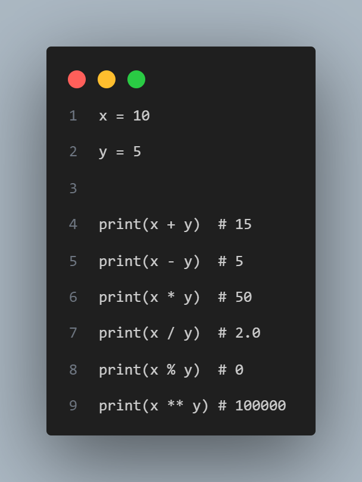
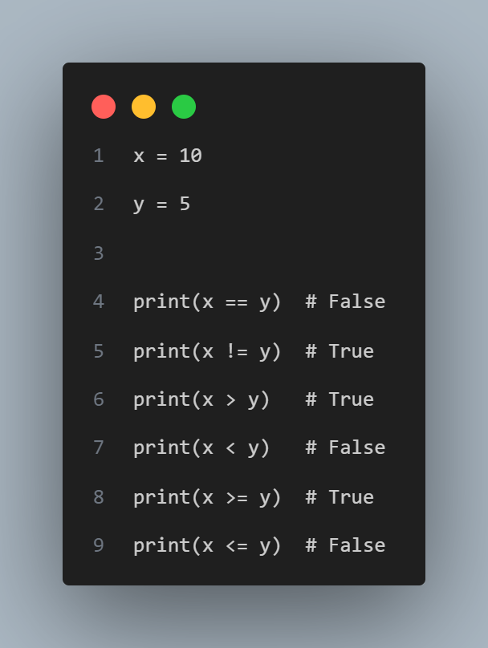
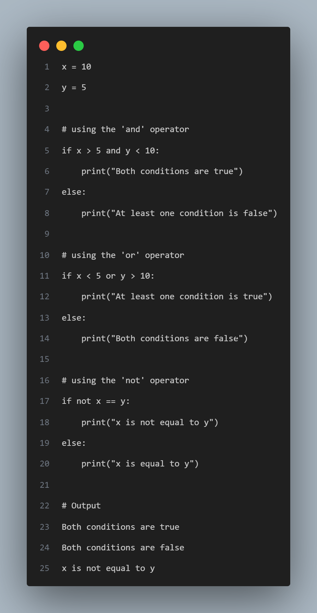
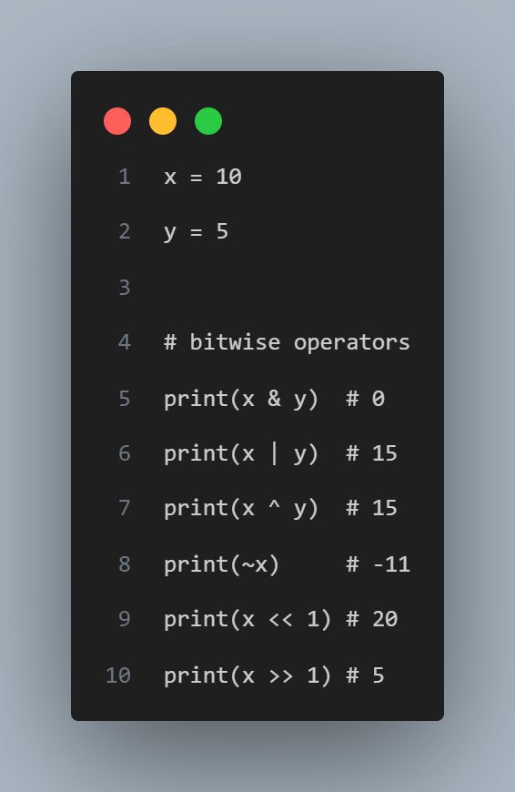
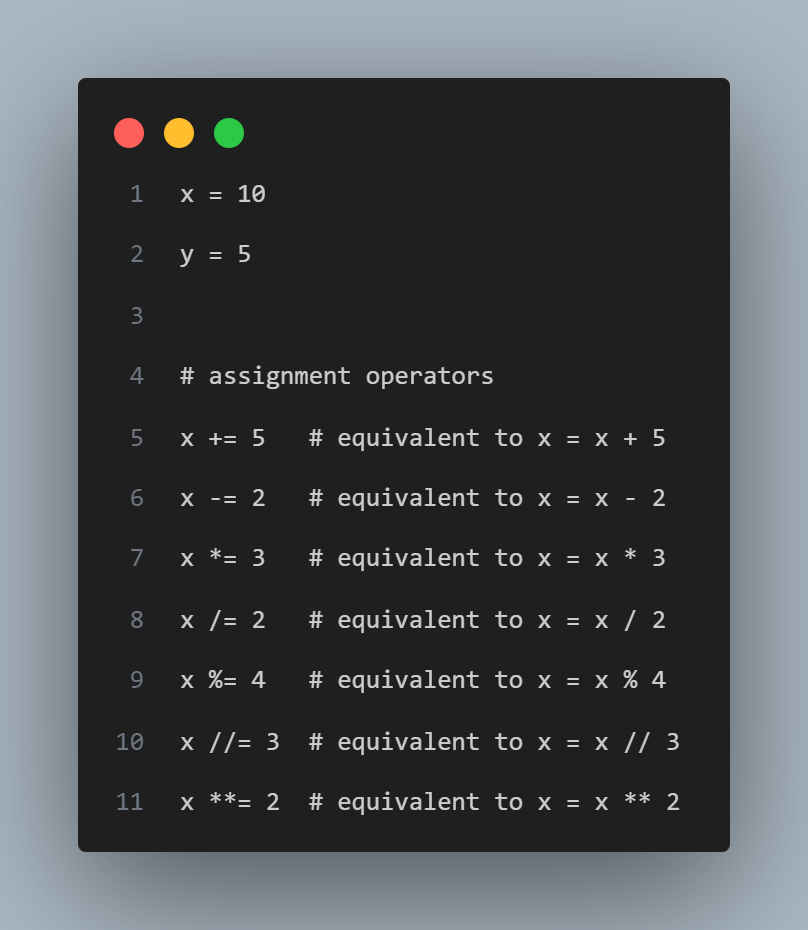
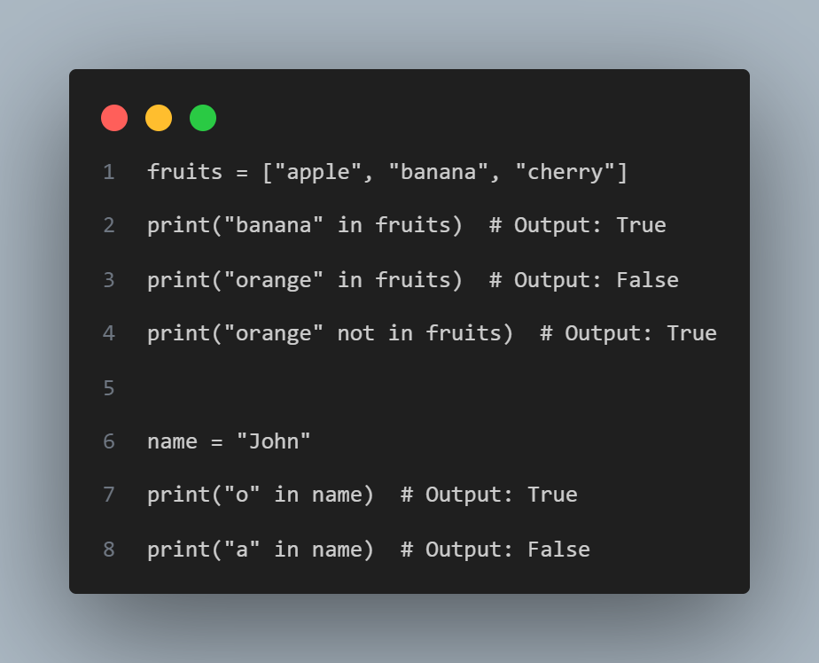

In Python, operators are special symbols or keywords that perform specific operations on one or more operands (values, variables,
or expressions). Python supports a variety of operators, including :
1. Arithmetic operators
2. Comparison operators
3. Logical operators
4. Bitwise operators
5. Assignment operators
6. Membership operators
1. Arithmetic operators.
Arithmetic Operators: These are used to perform mathematical operations like addition, subtraction,
multiplication, division, modulus and exponential.
'+' : Addition
'-' : Subtraction
'*' : Multiplication
'/' : Division
'%' : Modulo
'**' : Exponential
Examples of Arithmetic Operators:

2. Comparison Operators.
Comparison Operators: These are used to compare two values and returns either True or False based on the comparison.
'==' : equal to
'!=' : not equal to
'>' : greater than
'<' : less than
'>=' : greater than or equal to
'<=' : less than or equal to
Examples of Comparison Operators:

3. Logical Operators.
Logical Operators: In Python, logical operators are used to combine two or more expressions that evaluate to
Boolean values (True or False). There are three logical operators in Python:
'and' : The and operator returns True if both expressions it connects are true. Otherwise, it returns False.
'or' : The or operator returns True if at least one of the expressions it connects is true. If both expressions are
false, it returns False.
'not' : The not operator is a unary operator that returns the opposite Boolean value of the expression it precedes.
That is, if the expression is True, it returns False, and if the expression is False, it returns True.
Examples of Logical Operators:

4. Bitwise Operators.
Bitwise Operators: In Python, bitwise operators are used to manipulate the bits of integers. There are six
bitwise operators in Python:
'&' : bitwise AND. It returns 1 if both the bits in the compared position are 1, else it returns 0.
'|' : bitwise OR. It returns 1 if either of the bits in the compared position is 1, else it returns 0.
'^' : bitwise XOR. It returns 1 if the bits in the compared position are different, else it returns 0.
'~' : bitwise NOT. It returns the one's complement of the number.
'<<' : bitwise left shift. It moves all the bits of the number to the left by the specified number of positions.
It effectively multiplies the number by 2 to the power of the specified number of positions.
'>>' : bitwise right shift. It moves all the bits of the number to the right by the specified number of positions.
It effectively divides the number by 2 to the power of the specified number of positions, discarding any remainders.
Bitwise operators are commonly used in low-level programming, such as device drivers, network protocols, and cryptography.
Examples of Bitwise Operators:

5. Assignment Operators.
Assignment Operators: In Python, assignment operators are used to assign values to variables. There are several
types of assignment operators in Python, including:
'=' (Simple Assignment) : This is the most common assignment operator, used to assign a value to a variable.
'+=' (Addition Assignment) : This operator adds the value on the right side to the variable on the left side and
assigns the result to the left side variable.
'-=' (Subtraction Assignment) : This operator subtracts the value on the right side from the variable on the left
side and assigns the result to the left side variable.
'*=' (Multiplication Assignment) : This operator multiplies the value on the right side with the variable on the
left side and assigns the result to the left side variable.
'/=' (Division Assignment) : This operator divides the variable on the left side by the value on the right side
and assigns the result to the left side variable.
'%=' (Modulus Assignment) : This operator takes the modulus of the variable on the left side with the value on the
right side and assigns the result to the left side variable.
Examples of Assignment Operators:

6. Membership Operators.
Membership Operators: Membership operators in Python are used to test whether a value is a member of a sequence
or not. There are two membership operators in Python:
'in' operator : The and operator returns True if both expressions it connects are true. Otherwise, it returns False.
'not in' operator : It returns True if a value is not found in the sequence, and False otherwise.
The sequence could be a string, a list, a tuple, or a dictionary.
Here is an example that demonstrates the use of membership operators:

In the first example, we have a list of fruits and we check if "banana" is in the list using the in operator, which returns True.
We then check if "orange" is in the list, which returns False. Finally, we check if "orange" is not in the list using the not in
operator, which returns True.
In the second example, we have a string "John" and we check if "o" is in the string using the in operator, which returns True.
We then check if "a" is in the string, which returns False.